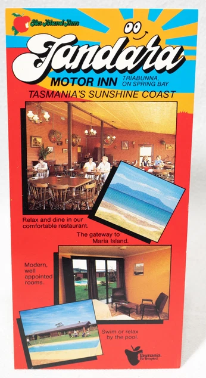
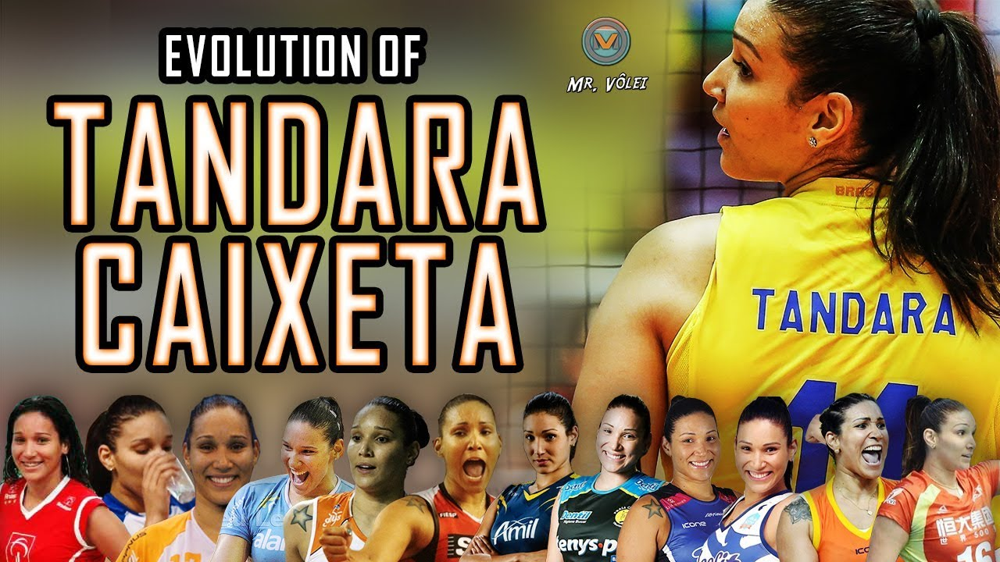

Interesting Facts About the Tandara Surname
Every surname has a story to tell
A surname is not merely a word recorded in a civil register. It is part of a family's identity, a link between past and future generations, and a lasting reminder of our ancestors. Each generation leaves a new mark through the lives of its members, which is why genealogy is not simply a list of names and dates, but a story about people, their families, customs, work and homeland.
A rare and distinctive surname
The surname Tandara belongs among the rare Croatian surnames. Its rarity makes it possible to trace family branches across several centuries and connect them with a high degree of certainty. Unlike very common surnames, most present-day bearers of the Tandara surname can trace their origins back to common ancestors.
A surname that is easy to remember
Tandara consists of three simple syllables – Tan – da – ra. Its rhythm and straightforward pronunciation make it easy to remember and give it a distinctive character.
More than three centuries of family history
Research carried out so far indicates that the Tandara surname appeared in historical records as early as the late 17th century. Despite wars, migrations and major social changes, the surname has remained almost unchanged for more than three hundred years. Such continuity reflects the family's long and rich history.
The name Tandara around the world
Although the origin of the Croatian surname Tandara has not yet been established with certainty, it is interesting that the word Tandara, or very similar forms of it, appears in different parts of the world – as a surname, a personal name, the name of a locality, or a word with a particular cultural meaning.
This similarity does not necessarily indicate a common origin. In most cases, these names developed independently of one another.
Tandara and Țândără – Croatian and Romanian forms of the name
The surname Tandara appears as an indigenous surname in two European countries – Croatia and Romania – and in both countries it occurs in two forms: as a surname and as the name of a locality, hamlet, district or smaller rural area. Despite this interesting similarity, the Croatian and Romanian forms do not share a common history or a common origin. According to the available information, the Croatian surname Tandara dates back to the late 17th century, while no comparable historical information is available for the Romanian surname Țândără.
Croatian form: Tandara
Spelling: Tandara
Pronunciation: TÀN-da-ra, with the stress on the first
syllable
Phonetic characteristics: a hard t sound, short vowels and an
even rhythm.
Historical context: the surname appears in Dalmatia and
Herzegovina.
Etymology: it is most commonly associated with the word
tandir – a metal stove used during the period of Ottoman rule.
The surname may have originated from the occupation of making or maintaining
metal stoves, from the object itself, namely the tandir as a recognisable
feature, or from a locality where such a stove was used.
Romanian form: Țândără
Spelling: Țândără
Pronunciation: tsân-DĂ-rə, with the stress on the second
syllable
Phonetic characteristics: the initial letter Ț is pronounced
like “ts”, while the vowel ă is a neutral schwa sound.
Etymology: the Romanian name derives from the word
țândără, meaning a splinter, wood chip or small piece of wood.
The surname most likely originated from an occupation connected with
woodworking, from a characteristic of a person who worked with wood chips,
or from a local name referring to wood remnants.
Differences in spelling and pronunciation
- Spelling: HR: Tandara / RO: Țândără
- Pronunciation: HR: TÀN-da-ra / RO: tsân-DĂ-rə
- Stress: HR: beginning / RO: middle
- Origin: HR: tandir, metal stove / RO: splinter, wood chip, woodworking
Listen to the pronunciation of both forms
Click the speaker icon to hear the pronunciation
The Tandara surname in Slovakia
In Slovakia, the surname Tandara appears primarily in the areas of Žilina and Košice, where it has been recorded among several modern families. Its present-day presence in these regions is most likely the result of population migrations from Transylvania during the 18th and 19th centuries. Genealogical databases and the geographical distribution of the surname suggest that Tandara is not an indigenous Slovak surname, but was brought to Slovakia from the Romanian area, where the related form Țândără exists.
There are also well-known contemporary bearers of the surname in Slovakia, which further confirms its presence:
- Lukáš Tandara — a professional puppeteer, actor and improviser from Žilina, associated with Clowndoctors.
- Marián Tandara — a footballer from Žilina who played for the U21 national team and plays as a right-back in the Slovak second division.


These examples show that the surname Tandara has survived and developed in various fields in Slovakia — from theatre to sport — but they do not alter the basic conclusion: it is most likely a surname that reached Slovakia from the Romanian area, where there is a strong linguistic and historical basis for its origin.
Nevertheless, although Romanian origin is the most likely explanation, the possibility cannot be completely excluded that an individual Croatian bearer of the surname Tandara settled in Slovakia during the 18th or 19th century. The Croatian form of the surname has a different etymology and historical development, so such a possibility could be clearly confirmed or ruled out only through DNA analysis, by comparing Croatian, Slovak and Romanian genetic lines.
Australia – origin and use of the name Tandara
Origin of the name Tandara in Australia
In the Australian context, Tandara is regarded as a name of Aboriginal origin, adopted from local languages of the Indigenous peoples of south-eastern Australia. In different dialects, the word is interpreted as a camping place, a place to stay or a resting place, and in modern interpretations also as a peaceful place or a place of quiet.
This is an example of the way European settlers adopted Aboriginal words and used them as names for pastoral properties, farms, settlements and other localities.
How the name Tandara developed in Victoria
According to this account, the name appeared in Victoria during the 1840s, when European settler John Aitken named a large pastoral run Tandara, using a word he had heard from local Aboriginal people.
- an Aboriginal word,
- the Tandara pastoral run in the 1840s,
- the name of a locality,
- the name of various premises, institutions and businesses.
This Australian origin of the name is not connected with the Croatian surname Tandara; it represents an independent origin and development of the same or a very similar name.
Where the name Tandara is used today
1. Official locality
Tandara, Victoria is the name of a rural locality in the Shire of Loddon.
2. Historical pastoral property
The name Tandara Station appears in historical records connected with nineteenth-century pastoral properties.
3. Farms, vineyards, tourism and other premises
The name Tandara is also used for farms, vineyards, rural accommodation, health and community centres, and projects associated with nature and rural surroundings.
4. Symbolic meaning
In modern use, the name is often associated with peace, nature, water, harmony and a rural setting.
Examples of the use of the name Tandara in Australia



Summary: in the Australian context, Tandara is interpreted as a name of Aboriginal origin associated with a place of staying, resting or peace. During the nineteenth century it was adopted as the name of a pastoral property and later spread to a locality and to a range of rural, tourism, health and business premises. This origin is independent of the Croatian surname Tandara.
Brazil – a female personal name
In Brazil, Tandara is used as a female personal name, and its international recognition was further increased by the well-known Brazilian volleyball player Tandara Caixeta. Although there is no single official explanation for why this particular name became popular, its phonetic and aesthetic qualities very likely contributed to its appeal.


The name Tandara gives the impression of being melodic, rhythmic, sonorous and easy to remember. It consists of three clearly separated syllables – Tan – da – ra – which create a natural rhythm and harmonious flow when spoken. This type of syllabic structure makes the name simple and pleasant to pronounce in many languages around the world.
Its phonetic balance gives it additional appeal. The initial sound T conveys decisiveness and clarity, the middle syllable da introduces movement and energy, while the ending ra adds warmth, openness and a pleasant final sound. The entire name sounds energetic, yet at the same time harmonious, elegant and easy to remember.
The name Tandara possesses a number of qualities that are often considered desirable in personal names:
- melodic quality and natural rhythm
- exceptional sonority and ease of pronunciation
- a harmonious syllabic structure
- dynamism and a sense of movement
- ease of memorisation
- distinctiveness among other names
- easy pronunciation in different languages
- originality and rarity
- a modern yet timeless character
- phonetic balance and harmony
- a warm and pleasant final sound
- elegance without complexity
- a positive first impression when spoken
- ease of spelling in different languages
- universality across different cultures.
Because of these qualities, the name Tandara easily attracts attention and leaves a positive first impression. It is therefore not surprising that it appears in different parts of the world as a personal name, a surname or a place name. Its pleasant sound transcends language barriers, making it equally appealing to speakers of different languages and cultures.
Although the reasons for choosing a personal name vary from one family to another, from a linguistic point of view the name Tandara belongs to a group of names that leave a strong aesthetic impression because of their melody, rhythm, pleasant sound, harmonious structure, ease of pronunciation, recognisability and originality. These qualities help explain why the name Tandara is perceived as attractive and why it has found its place in different cultures around the world.
Our research continues
Despite the large number of documents collected so far, family history is never completely finished. Every newly discovered parish register, old photograph, letter or family story can provide valuable new information and help complete the mosaic of the past. That is why the Digital Archive of the Tandara Family Line has been conceived as a permanent project that will continue to grow with new discoveries.
Are you also a Tandara?
Do you bear the Tandara surname, or do you have members of the Tandara family among your ancestors? I warmly invite you to get in touch. Your family photographs, documents or personal memories may help expand and enrich the shared history of the Tandara family line.
Every piece of information, no matter how small it may seem at first glance, can become a valuable part of our common family heritage that we preserve together for future generations.
Welcome to the Digital Archive of the Tandara Family Line.